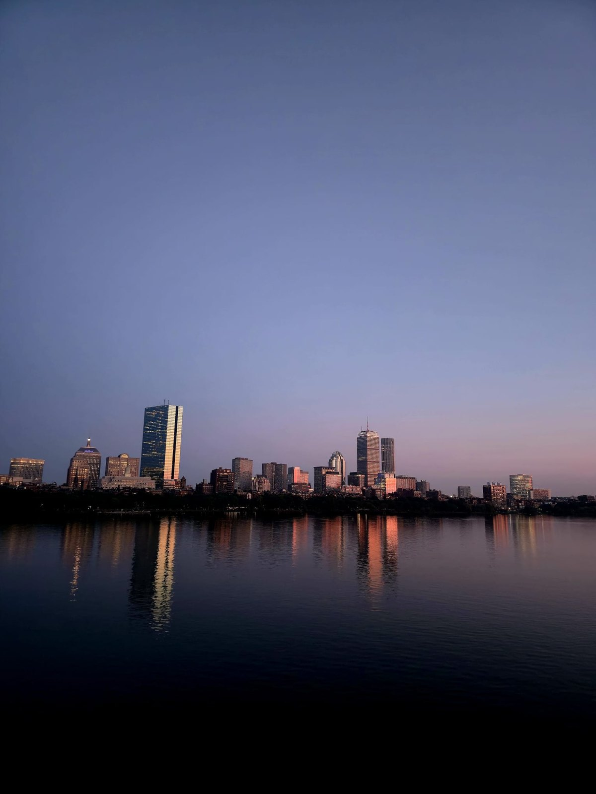

Mechatronics Engineering · est. Waterloo
Batteries · Manufacturing R&D · Robotics
An engineer who builds the machines that build things — from Tesla’s 4680 cell lines to autonomous rovers and hand-turned CNC woodwork.
I’m a fourth-year Mechatronics Engineering candidate at the University of Waterloo who is happiest with a problem that spans the whole stack — electrode to embedded C, controls loop to dashboard. Six engineering terms across Tesla, Whoop, Symbotic and MICRO have taught me to make real hardware measurably better.
From battery cell manufacturing R&D at Tesla to next-generation pack testing at Whoop and Symbotic, my work lives where mechanical design, controls, and data meet the factory floor. I write embedded C for STM32s, design fixtures with GD&T and DFMA in SolidWorks, and lean on SQL and dashboards to prove a change actually worked.
Away from batteries I build robots — streaming live vision from an NVIDIA Jetson over ROS2 for Waterloo’s Mars Rover team, and prototyping an original 3D-printed quadruped. I like projects that reward being equally comfortable with a soldering iron, a CAD kernel, and a control system.

Determined battery endurance for breakpack products, justifying a $2.5M product-budget increase; instrumented a Minibot with a voltage divider and sense resistor for coulombic counting.
Authored and ran the test plan for next-generation battery packs against PRD & safety requirements, validated fuel-gauge IC accuracy, and built accelerated-aging and capacity dashboards.
Developed processes for the 4680 tabless-cell program contributing to a 10% output increase, and designed an STM32-based embedded system to characterize cell thermal resistance.
Led a high-priority project contributing to a 70% reduction in 4680 quality escapes with a closed-loop exhaust-flow poka-yoke; ran root-cause analyses, DOEs, and yield/OEE studies.
Built and validated (IQ/OQ/PQ) processes for robot-operated medical instruments and cut cycle times 20% on laser welders and CNC machines through G&M-code optimization.
Integrated OpenCV and PyQt to stream live camera video to a driver GUI over ROS2 pub/sub in C++, and tested hardware on NVIDIA Jetson, O-Drive controllers and STM32s.